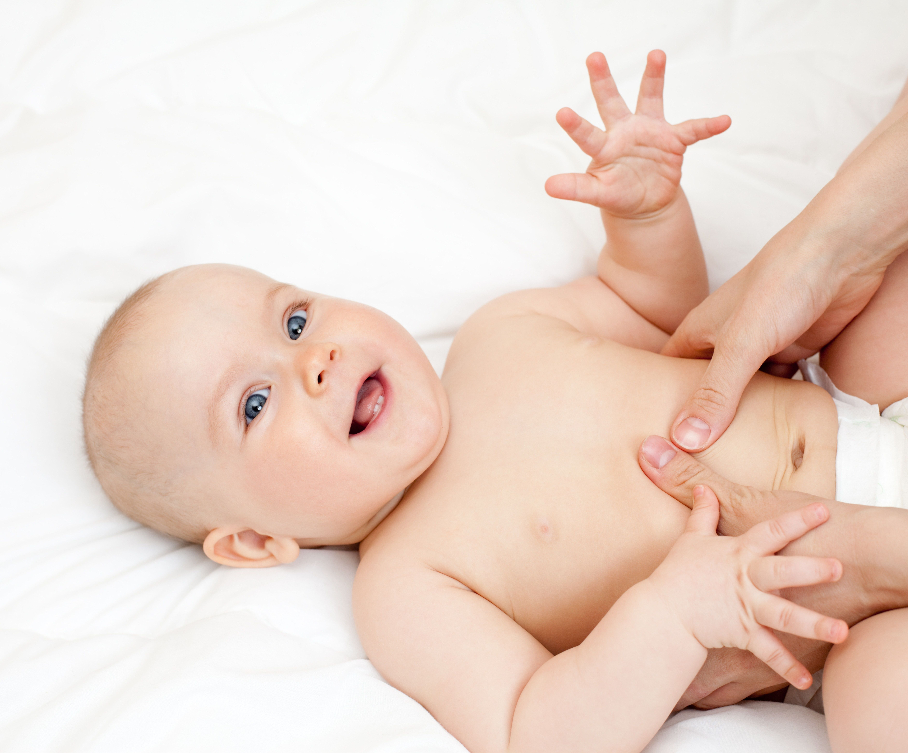
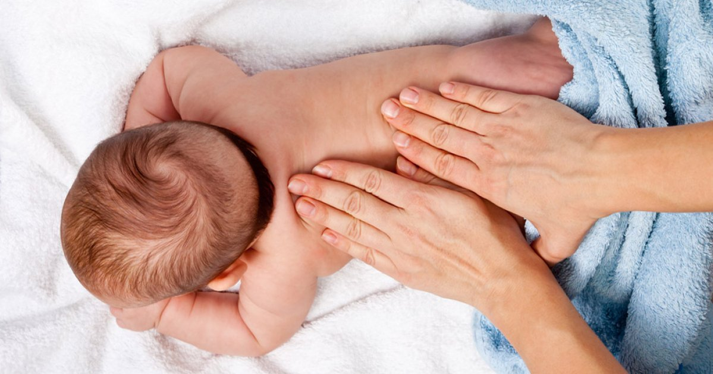
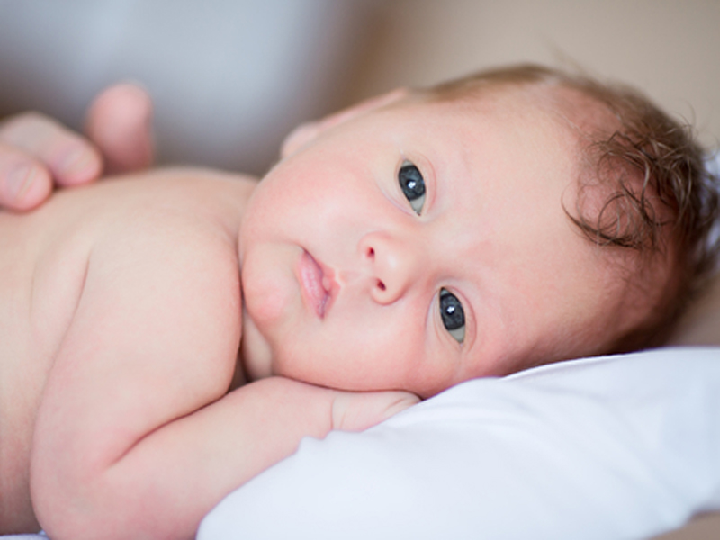

Bienfaits pour les bébés :
Intéraction :
- le lien d'attachement
- le toucher nourissant
- la communication verbale et non verbale
- ...
Relaxation :
- l'amélioration du sommeil
- la réduction du niveau de stress
- ...
Soulagement :
- des coliques
- des problèmes digestifs
- des poussées dentaires
- ...
Stimulation :
- du système : nerveux, digestif, circulatoire, immunitaire
- du développement : du language, de la conscience corporelle...

Bienfaits pour les parents :
- amélioration de l'estime de soi et de la confiance en soi
- augmentation des compétences parentales
- diminution de la dépression post-partum
- ...
Déroulement des ateliers :
- accueil
- relaxation
- théorie autour du massage
- apprentissage des mouvements de massage
- temps d'échange autour de la parentalité
Un flacon d'huile de massage 100% bio et un livret avec les mouvements des massages vous sont offerts.
pour le confort de votre bébé prévoir :
- une serviette de toilette
- une petite couverture
- une couche
- de quoi lui donner à boire car le massage donne soif
Pour votre confort prévoir des vêtements souples et confortables.
Tarifs :
Ateliers collectifs :
- 5 séances de 1h30 sur 5 semaines consécutives
- 125€ les 5 séances
Ateliers individuels :
- 5 séances de 1h sur 5 semaines consécutives
- 150€ les 5 séances
Bons cadeaux de naissance à offrir.
Possibilité de paiements échelonnés.
Les parents massent leur bébé, si votre bébé dort ou refuse le massage, je vous prête un poupon sur lequel vous pourrez vous familiariser avec les mouvements de massage
lors des ateliers j'accueille 5 bébés maximum par groupe.
les papas sont les bienvenus
